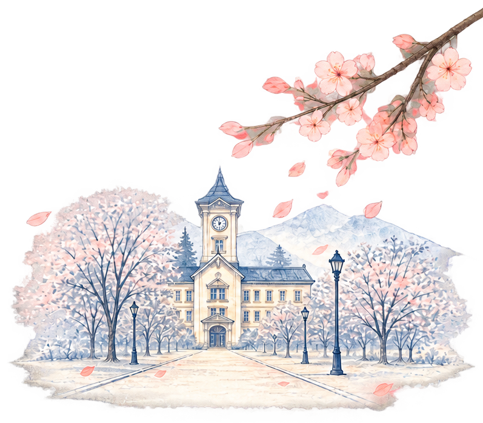
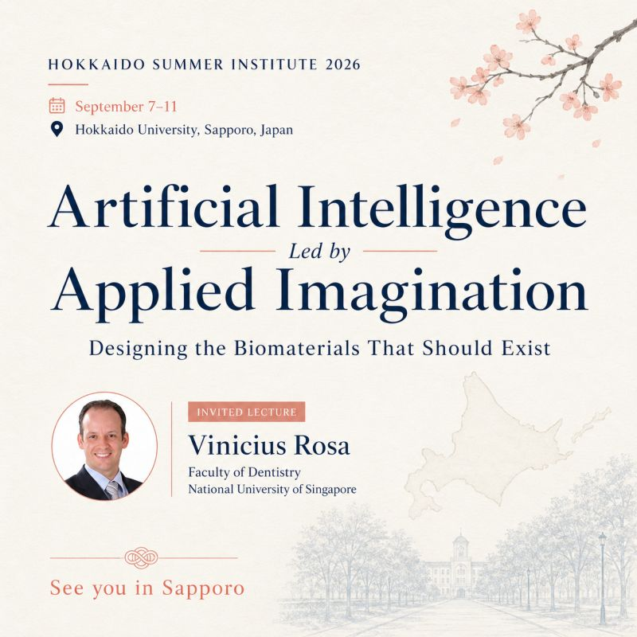

Artificial Intelligence Applied Imagination at Hokkaido Summer Institute 2026
A/P Rosa will share how artificial intelligence can bring precision and imagination together to design new bioactive materials.

A/P Rosa will join the Hokkaido Summer Institute 2026 as an invited speaker at Hokkaido University in Sapporo, Japan.
His lecture, Artificial Intelligence Applied | Imagination, will explore how AI can support the design of new bioactive materials — moving beyond the analysis of materials that already exist toward imagining the ones that should exist.
Designing the biomaterials that should exist.
Precision and imagination. Two ideas that are becoming increasingly connected as researchers rethink how biomaterials can be discovered, designed and optimized.
Rosa looks forward to the discussions in Hokkaido and to meeting Kenta Tsuchiya, colleagues and students in Sapporo.
